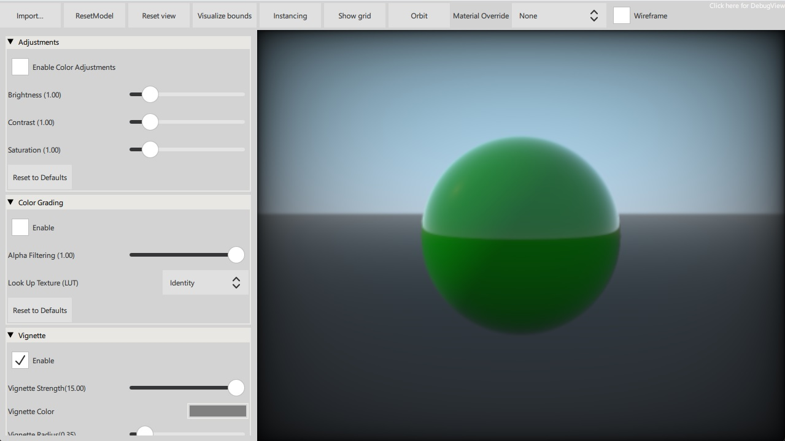

Qt Quick 3D - Scene Effects Example
Demonstrates the use of ExtendedSceneEnvironment.

This example demonstrates using various features of SceneEnvironment and ExtendedSceneEnvironment.
Note: The example is able to load glTF models at runtime. Some effects work best with complex models, and therefore it may be useful to experiment with models other than the built-in primitives. A recommended source of test content is the Khronos glTF Sample Models repository.